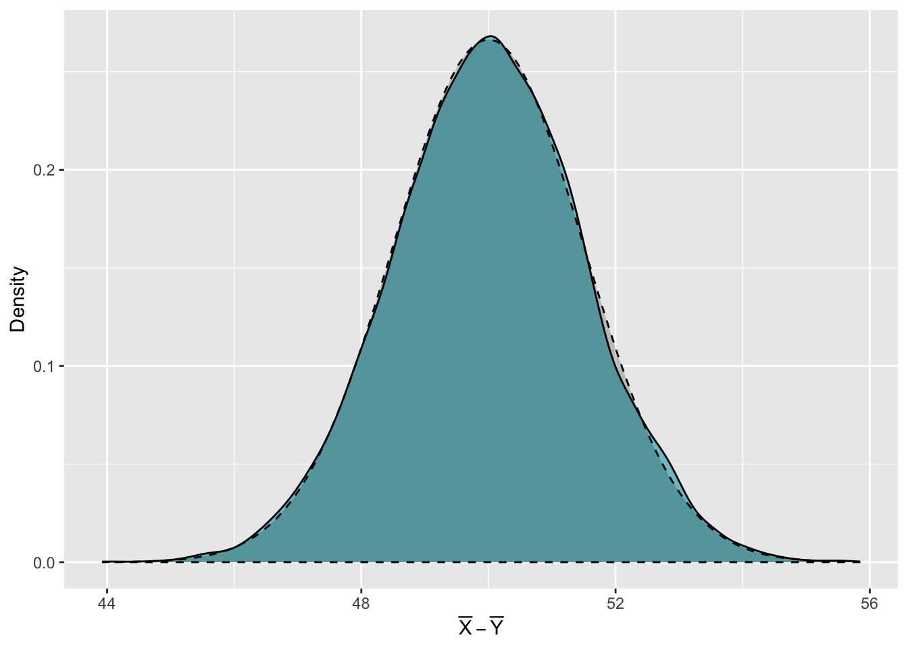

2 Sampling distribution for \(\bar X - \bar Y\)
For two independent normal random variables \(X\) and \(Y\), with distributions \(X\sim N(\mu_X,\,\sigma_X)\) and \(Y\sim N(\mu_Y,\,\sigma_Y)\) respectively, the distribution of \(\bar X-\bar Y\) is,
\[ \bar X-\bar Y\sim N\Bigg(\mu_X-\mu_Y,\,\sqrt{\frac{\sigma_X^2}{n_X}+\frac{\sigma_y^2}{n_Y}}\Bigg) \]
where \(n_X\) is the size of the sample taken from the distribution for \(X\) and \(n_Y\) is the size of the sample taken from the distribution for \(Y\).
We can show that this result is true by sampling from the distributions of \(X\) and \(Y\) in R and creating a new sampling distribution for \(\bar X -\bar Y\).
Specifically, we will;
- Draw \(m=\) 20,000 samples of size \(n_X=\) 120 from the distribution \(X\sim N(90,\,12)\) and calculate the mean of each of these samples.
- Draw \(m=\) 20,000 samples of size \(n_Y=\) 96 from the distribution \(Y\sim N(40,\,10)\) and calculate the mean of each of these samples.
- Calculate the difference between the sample means from the distribution for \(X\) and from the distribution for \(Y\) - that is \(\bar X-\bar Y\).
- Check whether the kernel density estimate of the distribution of these differences is similar to the expected normal distribution, as stated above.
Using the statement above about the distribution of \(\bar X-\bar Y\), what distribution would you expect the differences in sample means to follow?
We know that \(X\sim N(90,\,12)\) and that we want to take samples of size 120 from this distribution. Therefore, we can say that \(\mu_X=90\), \(\sigma_X=12\) and \(n_X=120\).
We also know that \(Y\sim N(40,\,10)\) and that we want to take samples of size 96 from this distribution, so \(\mu_Y=40\), \(\sigma_Y=10\) and \(n_Y=96\).
Plugging these values into the given distribution for \(\bar X-\bar Y\) tells us that,
\[ \bar X-\bar Y\sim N\Big(90-40=50,\,\sqrt{\textstyle\frac{12^2}{120}+\textstyle\frac{10^2}{96}}\Big) \]
Complete the code below draw 20,000 samples of size 120 from the \(N(90,\, 12)\) distribution and save the mean of each sample in a vector called meansX.
Let m represent the number of samples you want to draw, and nx represent the size each sample should be i.e. \(n_X\).
m <-
nx <-
meansX <-
(){
meansX[i] <- mean((nx, mean =, sd =))
}
Similarly, we can draw 20,000 samples of size \(n_Y=\) 96 from the \(N(40,\, 10)\) distribution and calculate the mean of each sample using the following code. As we've seen before, this makes use of a for loop to draw each sample and calculate its mean, before saving the mean in the vector meansY.
m <- 20000
ny <- 96
meansY <- numeric(m)
for(i in 1:m){
meansY[i] <- mean(rnorm(ny, mean = 40, sd = 10))
}We can then calculate the difference between each pair of means and store these differences in the data frame XY. We use a data frame, rather than a vector here, so that we can go on to plot the distribution of differences using ggplot2.
Finally, we can use ggplot2 to plot the kernel density estimate of the differences between each pair of sample means from the \(N(90,\,12)\) and \(N(40,\,10)\) distributions. We do this using the geom_density() function.
We know that \(\bar X-\bar Y\) follows the \(N\Big(50,\,\sqrt{\textstyle\frac{12^2}{120}+\textstyle\frac{10^2}{96}}\Big)\) distribution, so we can superimpose this above the kernel density estimate to assess how similar they are. We do this by including the layer stat_function(). Because the distribution we want to show is a normal distribution, we use the argument fun = dnorm. The mean and standard deviation, \(50\) and \(\sqrt{\textstyle\frac{12^2}{120}+\textstyle\frac{10^2}{96}}\) respectively, are included within a list given to the argument args =. We can also set some stylistic choices of how this normal distribution should appear using the col =, linetype =, fill =, alpha = and geom = arguments.
ggplot(data = XY) +
geom_density(aes(x = diff), fill = "cadetblue3") +
stat_function(fun = dnorm, args = list(mean = 50, sd = sqrt(12^2/120 + 10^2/96)),
geom = "area", col = "black", linetype = 2, fill = "black", alpha = 0.2) +
labs(x = expression(bar(X)-bar(Y)), y = "Density")
Do you think the kernel density estimate of the distribution of the differences between pairs of sample means is approximately equal to the \(N\Big(50,\,\sqrt{\textstyle\frac{12^2}{120}+\textstyle\frac{10^2}{96}}\Big)\) distribution?
We can use our calculated differences between the sample means of \(X\) and \(Y\) to estimate probabilities for \(\bar X-\bar Y\). For example, you might be asked, what is the probability that the difference between the mean of \(X\) and the mean of \(Y\) is greater than 48?
We can use the values of differences between the pairs of sample means to answer this. We use a logical statement, XY$diff > 48, to identify which of the calculated differences are greater than 48. This logical statement returns 20,000 values - TRUE if the corresponding difference was greater than 48 and FALSE if the difference was less than or equal to 48. We can then plug this logical vector into the mean() function to tell us the proportion of differences that were greater than 48. This proportion is a good approximation of the true probability \(P\big(\bar X-\bar Y>48\big)\) and using the code below, we see that this is roughly equal to 0.90745.
[1] 0.90745Because we have used our samples to calculate this probability, this is known as an empirical probability. We could also find the true, theoretical probability that \(P\big(\bar X-\bar Y>48\big)\) by using the fact that \(\bar X-\bar Y\sim N\Big(50,\,\sqrt{\textstyle\frac{12^2}{120}+\textstyle\frac{10^2}{96}}\Big)\).
We can use the function pnorm() to find the probability that \(P\big(\bar X-\bar Y\leq 48\big)\). Then, in order to find \(P\big(\bar X-\bar Y>48\big)\), we simply calculate \(1-\) the result from pnorm(). This is shown in the code below.
[1] 0.9091942Notice how close the empirical probability we calculated from our samples is to the true, theoretical probability.
You can follow a similar example of using R to create a sample sampling distribution for \(\bar X-\bar Y\) in Section 6.5.2 Sampling Distribution for \(\bar X-\bar Y\) When Sampling from Two Independent Normal Populations in Probability and Statistics with R.